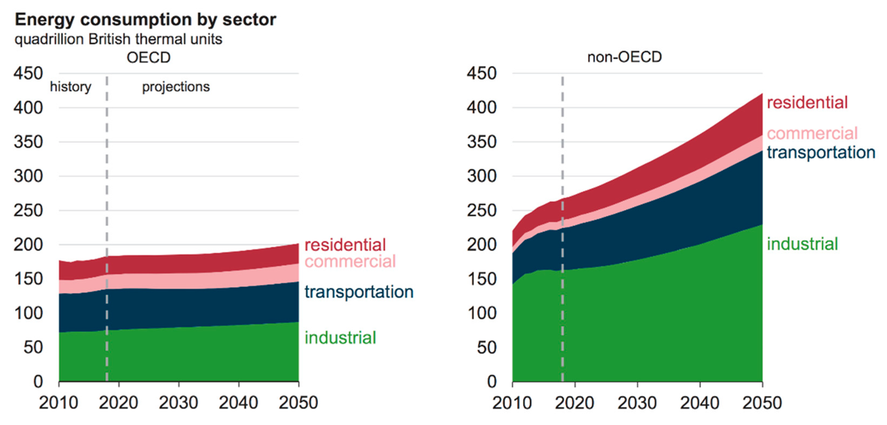

This mini-lecture reflects on
Next, we will explore the industrial and commercial sectors and their respective energy demands. As can be seen from Figure 6.3.1, the industrial sector is responsible for a large share of energy consumption across the world. The industrial sector is forecast to rise in non-OECD countries significantly. We must also consider this growing expected demand in the modelling process and during policy design.

Figure 6.3.1: Energy consumption by sector, OECD and non-OECD (Mendoza et al. 2020).
Energy is used in industry for a number of different purposes. For instance, heating and cooling, running machinery and chemical processes. These processes use a large variety of fuels and depend on the purpose, location and the technoeconomics.
The commercial sector has a lower energy demand when compared to the industrial sector. This is because commercial processes, typically, are less energy intense and on smaller scales. This demand is often lighting, heating and to run office equipment and appliances.
Commercial activities use many different technologies which require energy inputs. For example, office electronics, lighting and heating systems. Many of these technologies use electricity. However, for some demands natural gas is used, for example for heating commercial buildings.
The industrial sector uses a wide range of technologies. This includes heavy machinery, boilers, heating and air conditioning. Again, a wide variety of fuels can be used for this. However, there exist a number of processes, such as steel manufacturing which require very high temperatures. This is usually only done by burning fossil fules, as it can be difficult to reach these high temperatures with electricity.
Similarly to the residential and transport sectors, we can use an energy balance to estimate industry demands. For instance, for industry heating demands. There are different technologies available for industrial heating. These can be grouped in a way that makes sense for your case study. However, as an example we can group these into high heat and low heat, which are modelled as separate demands. This is because generating very high temperatures requires different technologies and processes to generating low heat.
Again, we can group the technologies by their input fuel, such as biomass, coal, oil products or electricity with the CommIn.csv file. Through modelling with MUSE we can understand the emissions and economics of different technologies.
In this mini-lecture we explored the industrial and commercial sectors. We learnt the difference between these two sectors in terms of demand and the different types of technologies used in these sectors. We saw that demand for the industrial sector is expected to rise significantly in non-OECD countries. Finally, we learnt how we can model different technologies in MUSE.